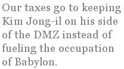

David Thornbrugh
Riding the Bus in South Korea
Rivers here are broad and shallow,
sandy grooves between concrete dikes.
Before the dams, every spring,
the coastal plains flooded.
White herons stand motionless
beside pale green waters, staring downward.
In the countryside, farmers spread rice
out to dry on strips of black cloth
laid both sides of concrete bridges.
The leaves fall from the persimmon trees,
exposing the fruit like orange constellations.
The terrible secret of language
is that it is unnecessary,
extraneous to the body's necessities.
When hungry, I search city streets
for models of noodles in bowls,
skewered fish on sticks,
a fried egg rampant on a field of rice.
Pointing and grunting will take you
around the world, even get you laid.
Behind restaurant tank glass,
cinnamon-colored eels tangle like
worn-out typewriter ribbons.
The people here are kind,
but evenings they suck meat fibers
from beef bones bubbling in thick
red pepper sauce, cheeks glowing
from sweet potato vodka.
"Be sure to wear a face mask in the spring.
Yellow dust blows out of the Gobi,
and it's toxic, full of heavy metals,
cadmium." In fields beside the road,
rice straw tied into bundles
stands like little teepees.
A row of scarecrows guards a vineyard,
but where are the crows?
Last night I dreamed flocks of migrating starlings
trooped the sky in black bands
as regular as the universal bar code
that prices all the commodities of our world -
even the birds, or so say my dreams.
When I change buses,
the new driver seeks me out to tell me something
I don't understand.
As so often in my life,
I smile and agree,
assuming all will work out for the best,
knowing that, soon enough,
death will erase any discomfort,
bury any shame.
Out of Asia
When I moved to Japan at 33, the poetry dried up.
I blamed it on a bad marriage, teaching English,
correcting camera ad copy and writing annual reports
for atomic power plant companies,
but it was something inside me that quit.
So many images pouring in, drunken groping,
Godzilla's sky line stamped with Mt. Fuji -
I just froze, choked on too much self absorption.
I poured the words into brochures for typewriters,
not sonnets or rants, no one to blame other
than the muse choking on green tea.
Now at 57 I live in South Korea in a shoe box
with a view of a bowling alley and greenhouses
of caterpillar plastic, and crossing the street
is a salmon run against hydroelectric turbines.
The words inside me jostle like koi in a pond
of muddy water, grown as large as pillows
from years of listening to temple chanting,
waiting to be snagged and bagged.
A junked bed has waited by the power pole
outside our apartment since the day we moved in,
just as all these words and images stack up
in me waiting for pick up, for workers in soiled clothes
to rummage through and collect what's thrown out,
what's stacked along the road for disposal.
Asia is more than a land mass,
poetry is more than words.
Expatriate or Refugee?
I am an American living in South Korea, where I support myself by teaching English to university students. This is my third experience living in a country other than the United States; earlier, I have lived in Poland and Japan (and Canada, but that hardly counts).
This time around, I don’t feel like an expatriate — that is, someone who has taken up residence in a country other than his own. That term calls up to my mind voluntary relocation, romantics in search of the current hot spot: Ernest Hemingway and Harry Crosby in Paris, Luis Bunuel in Mexico City, William Burroughs in Tangiers. In my mind, and sometimes experience, expatriates coalesce in their chosen locales into bundles of vibrating talent or shared energy, and feed upon and nurture one another’s presence.
No, I feel more like an economic or a political refugee. I decamped from Seattle in 2004 to the new EU member of Poland because I was a statistic of the dot com bust, and because my native land (the word “homeland” twists in my throat like a fish bone, with all its Teutonic and militaristic reverberations) was beginning to feel like Germany circa 1934. The streets were filled with rhinoceroses and hardly anyone thought that strange. Waterboarding wasn’t — isn’t — torture because “we don’t do torture.” Or nuance, either, though body counts have recently crept back into the official vocabulary of our rulers.
I feel like a refugee, not an expatriate. I live comfortably but without the comfort of a shared community. We are in South Korea now for the money. Our taxes go to keeping Kim Jong-il on his side of the DMZ instead of fueling the occupation of Babylon. I visit Buddhist temples and scrub myself clean among naked Korean men who carefully avert their eyes from my obvious otherness. I can go “home” any time I choose, but my daily browse of online news makes me doubt more and more whether the home I once cherished exists any longer. The words I read coming from American mouths are in an English I hardly understand, and wonder whether I can any longer fit into my own: freedom, democracy, terrorism, justice. Yesterday, a young man in my writing class quoted Thucydides on the Peloponnesian war, from the Melian dialogue: “The strong do what they can, and the weak endure what they must.” I recognized the source of the old cliché, might makes right, but spoken by a TV talk show host shouting down an advocate for diplomacy in one of the empire’s many hotspots. In the end, the Athenians besieged Melos, conquered it, and put to the sword all the men and sold all the women and children into slavery. It was all too easy for me to hear that infamous phrase uttered in American English, which is what I teach.
David Thornbrugh currently writes from South Korea, where he teaches English in a National University. He writes to push back the darkness a little bit at a time, in the same flighty manner as lightning bugs. He has been published in numerous small press journals, and once wrote the questions for a geography textbook. He prefers multiple choice questions to True/False.
|